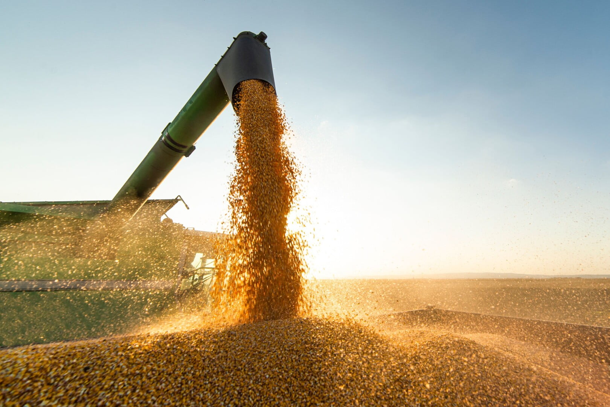
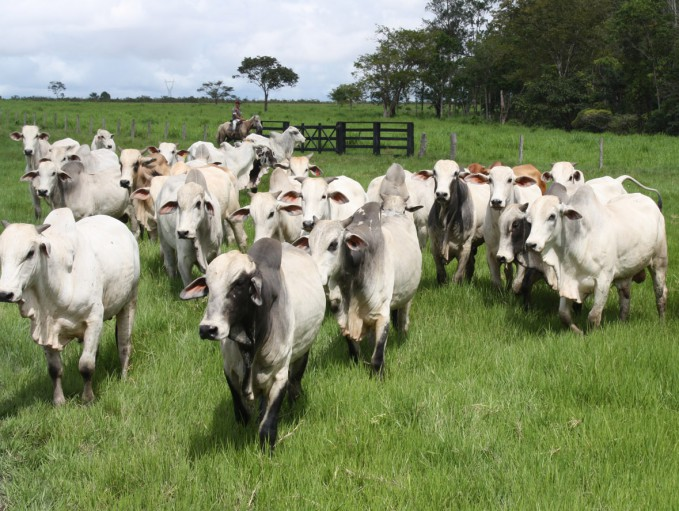

QUEM SOMOS
O AgroBase é uma plataforma que tem como objetivo é criar um dashboard com dados relacionados ao agronegócio, a fim de fornecer informações precisas e atualizadas para tomada de decisões estratégicas pelos gestores do setor do agronégocio.

TECNOLOGIAS E ARQUITETURA
A plataforma utilizará tecnologias web como HTML, SCSS e TypeScript para o desenvolvimento de interfaces e aplicações. A arquitetura em camadas (Layered Architecture) será utilizada no sistema que será dividido em camadas distintas, onde cada camada possui responsabilidades específicas. que incluem a interface do usuário, lógica de negócio e acesso a dados.
CÓDIGO DE CONDUTA
O código de conduta do nosso projeto é fundamental para mantermos um ambiente colaborativo, inclusivo e respeitoso. Nele, estabelecemos as diretrizes que todos os participantes devem seguir para garantir uma comunidade saudável e livre de qualquer comportamento inadequado. Para mais informações acesse nosso código de conduta

SEJA UM COLABORADOR